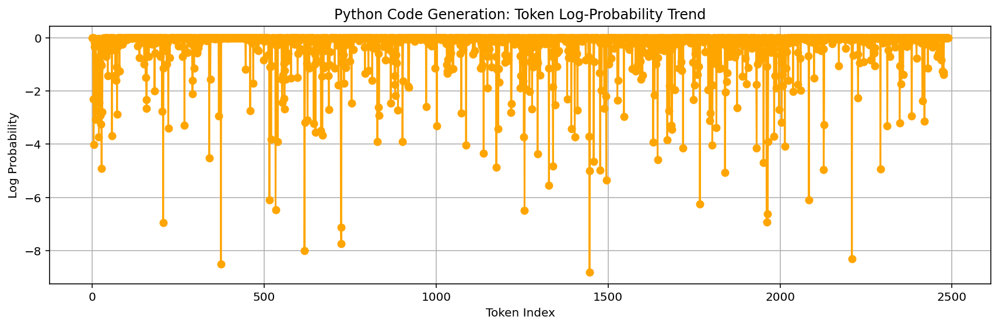
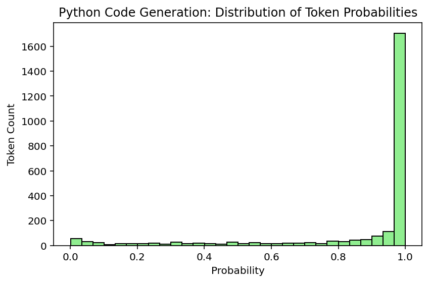
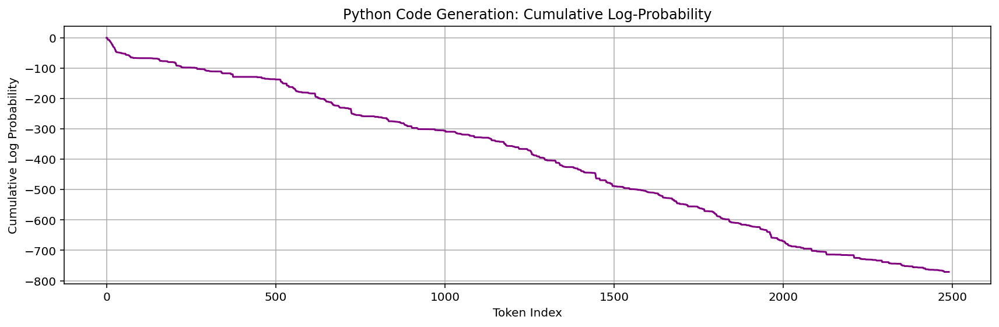

LLM Code Generation Report #7
Selected User Stories
As a Data user, I want to have the 12-19-2017 deletions processed.
As a UI designer, I want to redesign the Resources page, so that it matches the new Broker design styles.
As a UI designer, I want to report to the Agencies about user testing, so that they are aware of their contributions to making Broker a better UX.
As a UI designer, I want to move on to round 2 of DABS or FABS landing page edits, so that I can get approvals from leadership.
As a UI designer, I want to move on to round 2 of Homepage edits, so that I can get approvals from leadership.
As a UI designer, I want to move on to round 3 of the Help page edits, so that I can get approvals from leadership.
As a Developer , I want to be able to log better, so that I can troubleshoot issues with particular submissions and functions.
As a Developer, I want to add the updates on a FABS submission to be modified when the publishStatus changes, so that I know when the status of the submission has changed.
As a DevOps engineer, I want New Relic to provide useful data across all applications.
As a UI designer, I want to move on to round 2 of the Help page edits, so that I can get approvals from leadership.
As a UI designer, I want to move on to round 2 of Homepage edits, so that I can get approvals from leadership.
As a Broker user, I want to Upload and Validate the error message to have accurate text.
As a Broker user, I want the D1 file generation to be synced with the FPDS data load, so that I don't have to regenerate a file if no data has been updated.
As a Website user, I want to access published FABS files, so that I can see the new files as they come in.
As an owner, I want to be sure that USAspending only send grant records to my system.
As a Developer, I want to update the Broker validation rule table to account for the rule updates in DB-2213.
As a Developer, I want to add the GTAS window data to the database, so that I can ensure the site is locked down during the GTAS submission period.
As a Developer, I want D Files generation requests to be managed and cached, so that duplicate requests do not cause performance issues.
As a user, I want to access the raw agency published files from FABS via USAspending.
As an Agency user, I want to be able to include a large number of flexfields without performance impact.
As a Broker user, I want to help create content mockups, so that I can submit my data efficiently.
As a UI designer, I want to track the issues that come up in Tech Thursday, so that I know what to test and what want s to be fixed.
As an Owner, I want to create a user testing summary from the UI SME, so that I can know what UI improvements we will follow through on.
As a UI designer, I want to begin user testing, so that I can validate stakeholder UI improvement requests.
As a UI designer, I want to schedule user testing, so that I can give the testers advanced notice to ensure buy-in.
As an Owner, I want to design a schedule from the UI SME, so that I know the potential timeline of the UI improvements wanted.
As an Owner, I want to design an audit from the UI SME, so that I know the potential scope of the UI improvements want ed.
As a Developer, I want to prevent users from double publishing FABS submissions after refreshing, so that there are no duplicates.
As an data user, I want to receive updates to FABS records.
As an Agency user, I want to be able to include a large number of flexfields without performance impact.
As a Developer , I want to update the FABS sample file to remove FundingAgencyCode after FABS is updated to no longer require the header.
As an agency user, I want to ensure that deleted FSRS records are not included in submissions.
As a website user, I want to see updated financial assistance data daily.
As a user, I want the publish button in FABS to deactivate after I click it while the derivations are happening, so that I cannot click it multiple times for the same submission.
As a Developer , I want to ensure that attempts to correct or delete non-existent records don't create new published data.
As an Owner, I want to reset the environment to only take Staging MAX permissions, so that I can ensure that the FABS testers no longer have access.
As a user, I want the flexfields in my submission file to appear in the warning and error files when the only error is a missing required element.
As a user, I want to have accurate and complete data related to PPoPCode and PPoPCongressionalDistrict.
As an agency user, I want the FABS validation rules to accept zero and blank for loan records.
As an Agency user, I want FABS deployed into production, so I can submit my Financial Assistance data.
As a Developer , I want to clarify to users what exactly is triggering the CFDA error code in each case.
As an agency user, I want to be confident that the data coming from SAM is complete.
As a Developer , I want my domain models to be indexed properly, so that I can get validation results back in a reasonable amount of time.
As an agency user, I want the FABS validation rules to accept zero and blank for non-loan records.
As a broker team member, I want to make some updates to the SQL codes for clarity.
As an agency user, I want to have all derived data elements derived properly.
As a broker team member, I want to add the 00***** and 00FORGN PPoPCode cases to the derivation logic.
As a data user, I want to see the office names derived from office codes, so that I can have appropriate context for understanding them.
As a broker user, I want the historical FABS loader to derive fields, so that my agency codes are correct in the PublishedAwardFinancialAssistance table.
As a broker team member, I want to ensure the Broker resources, validations, and P&P pages are updated appropriately for the launch of FABS and DAIMS v1.1.
As a Developer, I want the data loaded from historical FABS to include the FREC derivations, so that I can have consistent FREC data for USASpending.gov.
As a user, I don't want to see NASA grants displayed as contracts.
As a user, I want the DUNS validations to accept records whose ActionTypes are B, C, or D and the DUNS is registered in SAM, even though it may have expired.
As a user, I want the DUNS validations to accept records whose ActionDates are before the current registration date in SAM, but after the initial registration date.
As a broker team member, I want to derive FundingAgencyCode, so that the data quality and completeness improves.
As an agency user, I want the maximum length allowed for LegalEntityAddressLine3 to match Schema v1.1.
As an agency user, I want to use the schema v1.1 headers in my FABS file.
As a agency user, I want to map the FederalActionObligation properly to the Atom Feed.
As a Broker user, I want to have PPoPZIP+4 work the same as the Legal Entity ZIP validations.
As a FABS user, I want to link the SAMPLE FILE on the "What you want to submit" dialog to point to the correct file, so that I have an accurate reference for my agency submissions.
As an Agency user, I want FPDS data to be up-to-date daily.
As a user, I want to access the raw agency published files from FABS via USAspending.
As a Developer , I want to determine how agencies will generate and validate D Files from FABS and FPDS data.
As a user, I want to generate and validate D Files from FABS and FPDS data.
As an Agency user, I want the header information box to show updated date AND time, so that I know when it was updated.
As an Agency user, I want to receive a more helpful file-level error when I upload a file with the wrong extension.
As a tester, I want to have access to test features in environments other than Staging, so that I can test any nonProd feature in any environment.
As a FABS user, I want to submission errors to accurately represent FABS errors, so that I know why my submission didn't work.
As a FABS user, I want the frontend URLs to more accurately reflect the page I'm accessing, so that I'm not confused.
As an Agency user, I want all historical Financial Assistance data loaded for FABS go-live.
As a Developer , I want the historical FPDS data loader to include both extracted historical data and FPDS feed data.
As an Agency user, I want historical FPDS data loaded.
As an Agency user, I want to accurately see who created a submission, so that I'm not confused about who last updated a submission.
As an agency user, I want to get File F in the correct format.
As an Agency user, I want to better understand my file-level errors.
As a Developer , I want to provide FABS groups that function under the FREC paradigm.
As a tester, I want to ensure that FABS is deriving fields properly through a robust test file plus a follow up check.
As an owner, I only want zero-padded fields, so that I can justify padding.
As a Broker user, I want to submit records for individual recipients without receiving a DUNS error.
As a user, I want more information about how many rows will be published prior to deciding whether to publish.
As a Developer, I want to prevent duplicate transactions from being published and deal with the time gap between validation and the publishing decision.
As a FABS user, I want to submit a citywide as a PPoPZIP and pass validations.
As a Broker user, I want to have updated error codes that accurately reflect the logic and provide enough information, so that I can fix my submission.
As an agency user, I want to leave off the last 4 digits of the ZIP without an error, so that I can complete my submissions.
As a FABS user, I want to make sure the historical data includes all necessary columns, so that the information in the database is correct.
As a data user, I want to access two additional fields from the FPDS data pull.
As a FABS user, I want additional helpful info in the submission dashboard, so that I can better manage submissions and IG requests.
As a FABS user, I want to download the uploaded FABS file, so that I can get the uploaded file.
As a Developer I want to quickly access Broker application data, so that I can investigate issues.
As a Developer , I want to determine the best way to load historical FPDS data, so that I can load all FPDS data since 2007.
As a FABS user, I want the language on FABS pages to be appropriate for me, so that I am not confused.
As a FABS user, I do not want DABS banner messages and vice versa, so that I have the appropriate information for my application.
As a FABS user, I want to have read-only access to DABS, so that I can view DABS pages without wanting two sets of permissions.
As a FABS user, I want to have my validations run in a reasonable amount of time.
As a FABS user, I want to see correct status labels on the Submission Dashboard, so that I can quickly see my submission history.
As an agency user, I want to know when the submission periods start and end, so that I know when the submission starts and ends.
As an agency user, I want a landing page to navigate to either FABS or DABS pages, so that I can access both sides of the site.
As an agency user, I want to submit my data elements surrounded by quotation marks, so that Excel won't strip off leading and trailing zeroes.
Prompt Sent to LLM
Generate fully functional Python code that implements the following user stories. The code should realistically reflect the described functionality.
As a Data user, I want to have the 12-19-2017 deletions processed.
As a UI designer, I want to redesign the Resources page, so that it matches the new Broker design styles.
As a UI designer, I want to report to the Agencies about user testing, so that they are aware of their contributions to making Broker a better UX.
As a UI designer, I want to move on to round 2 of DABS or FABS landing page edits, so that I can get approvals from leadership.
As a UI designer, I want to move on to round 2 of Homepage edits, so that I can get approvals from leadership.
As a UI designer, I want to move on to round 3 of the Help page edits, so that I can get approvals from leadership.
As a Developer , I want to be able to log better, so that I can troubleshoot issues with particular submissions and functions.
As a Developer, I want to add the updates on a FABS submission to be modified when the publishStatus changes, so that I know when the status of the submission has changed.
As a DevOps engineer, I want New Relic to provide useful data across all applications.
As a UI designer, I want to move on to round 2 of the Help page edits, so that I can get approvals from leadership.
As a UI designer, I want to move on to round 2 of Homepage edits, so that I can get approvals from leadership.
As a Broker user, I want to Upload and Validate the error message to have accurate text.
As a Broker user, I want the D1 file generation to be synced with the FPDS data load, so that I don't have to regenerate a file if no data has been updated.
As a Website user, I want to access published FABS files, so that I can see the new files as they come in.
As an owner, I want to be sure that USAspending only send grant records to my system.
As a Developer, I want to update the Broker validation rule table to account for the rule updates in DB-2213.
As a Developer, I want to add the GTAS window data to the database, so that I can ensure the site is locked down during the GTAS submission period.
As a Developer, I want D Files generation requests to be managed and cached, so that duplicate requests do not cause performance issues.
As a user, I want to access the raw agency published files from FABS via USAspending.
As an Agency user, I want to be able to include a large number of flexfields without performance impact.
As a Broker user, I want to help create content mockups, so that I can submit my data efficiently.
As a UI designer, I want to track the issues that come up in Tech Thursday, so that I know what to test and what want s to be fixed.
As an Owner, I want to create a user testing summary from the UI SME, so that I can know what UI improvements we will follow through on.
As a UI designer, I want to begin user testing, so that I can validate stakeholder UI improvement requests.
As a UI designer, I want to schedule user testing, so that I can give the testers advanced notice to ensure buy-in.
As an Owner, I want to design a schedule from the UI SME, so that I know the potential timeline of the UI improvements wanted.
As an Owner, I want to design an audit from the UI SME, so that I know the potential scope of the UI improvements want ed.
As a Developer, I want to prevent users from double publishing FABS submissions after refreshing, so that there are no duplicates.
As an data user, I want to receive updates to FABS records.
As an Agency user, I want to be able to include a large number of flexfields without performance impact.
As a Developer , I want to update the FABS sample file to remove FundingAgencyCode after FABS is updated to no longer require the header.
As an agency user, I want to ensure that deleted FSRS records are not included in submissions.
As a website user, I want to see updated financial assistance data daily.
As a user, I want the publish button in FABS to deactivate after I click it while the derivations are happening, so that I cannot click it multiple times for the same submission.
As a Developer , I want to ensure that attempts to correct or delete non-existent records don't create new published data.
As an Owner, I want to reset the environment to only take Staging MAX permissions, so that I can ensure that the FABS testers no longer have access.
As a user, I want the flexfields in my submission file to appear in the warning and error files when the only error is a missing required element.
As a user, I want to have accurate and complete data related to PPoPCode and PPoPCongressionalDistrict.
As an agency user, I want the FABS validation rules to accept zero and blank for loan records.
As an Agency user, I want FABS deployed into production, so I can submit my Financial Assistance data.
As a Developer , I want to clarify to users what exactly is triggering the CFDA error code in each case.
As an agency user, I want to be confident that the data coming from SAM is complete.
As a Developer , I want my domain models to be indexed properly, so that I can get validation results back in a reasonable amount of time.
As an agency user, I want the FABS validation rules to accept zero and blank for non-loan records.
As a broker team member, I want to make some updates to the SQL codes for clarity.
As an agency user, I want to have all derived data elements derived properly.
As a broker team member, I want to add the 00***** and 00FORGN PPoPCode cases to the derivation logic.
As a data user, I want to see the office names derived from office codes, so that I can have appropriate context for understanding them.
As a broker user, I want the historical FABS loader to derive fields, so that my agency codes are correct in the PublishedAwardFinancialAssistance table.
As a broker team member, I want to ensure the Broker resources, validations, and P&P pages are updated appropriately for the launch of FABS and DAIMS v1.1.
As a Developer, I want the data loaded from historical FABS to include the FREC derivations, so that I can have consistent FREC data for USASpending.gov.
As a user, I don't want to see NASA grants displayed as contracts.
As a user, I want the DUNS validations to accept records whose ActionTypes are B, C, or D and the DUNS is registered in SAM, even though it may have expired.
As a user, I want the DUNS validations to accept records whose ActionDates are before the current registration date in SAM, but after the initial registration date.
As a broker team member, I want to derive FundingAgencyCode, so that the data quality and completeness improves.
As an agency user, I want the maximum length allowed for LegalEntityAddressLine3 to match Schema v1.1.
As an agency user, I want to use the schema v1.1 headers in my FABS file.
As a agency user, I want to map the FederalActionObligation properly to the Atom Feed.
As a Broker user, I want to have PPoPZIP+4 work the same as the Legal Entity ZIP validations.
As a FABS user, I want to link the SAMPLE FILE on the "What you want to submit" dialog to point to the correct file, so that I have an accurate reference for my agency submissions.
As an Agency user, I want FPDS data to be up-to-date daily.
As a user, I want to access the raw agency published files from FABS via USAspending.
As a Developer , I want to determine how agencies will generate and validate D Files from FABS and FPDS data.
As a user, I want to generate and validate D Files from FABS and FPDS data.
As an Agency user, I want the header information box to show updated date AND time, so that I know when it was updated.
As an Agency user, I want to receive a more helpful file-level error when I upload a file with the wrong extension.
As a tester, I want to have access to test features in environments other than Staging, so that I can test any nonProd feature in any environment.
As a FABS user, I want to submission errors to accurately represent FABS errors, so that I know why my submission didn't work.
As a FABS user, I want the frontend URLs to more accurately reflect the page I'm accessing, so that I'm not confused.
As an Agency user, I want all historical Financial Assistance data loaded for FABS go-live.
As a Developer , I want the historical FPDS data loader to include both extracted historical data and FPDS feed data.
As an Agency user, I want historical FPDS data loaded.
As an Agency user, I want to accurately see who created a submission, so that I'm not confused about who last updated a submission.
As an agency user, I want to get File F in the correct format.
As an Agency user, I want to better understand my file-level errors.
As a Developer , I want to provide FABS groups that function under the FREC paradigm.
As a tester, I want to ensure that FABS is deriving fields properly through a robust test file plus a follow up check.
As an owner, I only want zero-padded fields, so that I can justify padding.
As a Broker user, I want to submit records for individual recipients without receiving a DUNS error.
As a user, I want more information about how many rows will be published prior to deciding whether to publish.
As a Developer, I want to prevent duplicate transactions from being published and deal with the time gap between validation and the publishing decision.
As a FABS user, I want to submit a citywide as a PPoPZIP and pass validations.
As a Broker user, I want to have updated error codes that accurately reflect the logic and provide enough information, so that I can fix my submission.
As an agency user, I want to leave off the last 4 digits of the ZIP without an error, so that I can complete my submissions.
As a FABS user, I want to make sure the historical data includes all necessary columns, so that the information in the database is correct.
As a data user, I want to access two additional fields from the FPDS data pull.
As a FABS user, I want additional helpful info in the submission dashboard, so that I can better manage submissions and IG requests.
As a FABS user, I want to download the uploaded FABS file, so that I can get the uploaded file.
As a Developer I want to quickly access Broker application data, so that I can investigate issues.
As a Developer , I want to determine the best way to load historical FPDS data, so that I can load all FPDS data since 2007.
As a FABS user, I want the language on FABS pages to be appropriate for me, so that I am not confused.
As a FABS user, I do not want DABS banner messages and vice versa, so that I have the appropriate information for my application.
As a FABS user, I want to have read-only access to DABS, so that I can view DABS pages without wanting two sets of permissions.
As a FABS user, I want to have my validations run in a reasonable amount of time.
As a FABS user, I want to see correct status labels on the Submission Dashboard, so that I can quickly see my submission history.
As an agency user, I want to know when the submission periods start and end, so that I know when the submission starts and ends.
As an agency user, I want a landing page to navigate to either FABS or DABS pages, so that I can access both sides of the site.
As an agency user, I want to submit my data elements surrounded by quotation marks, so that Excel won't strip off leading and trailing zeroes.
Output only Python code (no markdown formatting or extra text). Do not leave functions empty — implement reasonable logic where needed.
Generated Code
# Note: This is a partial implementation as the full requirements would span an entire project structure
# This example provides core implementations for several key user stories
import logging
from datetime import datetime
from typing import List, Dict, Optional
from dataclasses import dataclass, field
from enum import Enum
import hashlib
# Setup basic logging configuration
logging.basicConfig(level=logging.INFO)
logger = logging.getLogger(__name__)
class SubmissionStatus(Enum):
DRAFT = "draft"
VALIDATING = "validating"
VALIDATED = "validated"
PUBLISHING = "publishing"
PUBLISHED = "published"
ERROR = "error"
@dataclass
class Submission:
submission_id: str
status: SubmissionStatus
file_path: str
created_by: str
created_at: datetime
updated_at: datetime
validation_results: List[Dict] = field(default_factory=list)
publish_status: Optional[str] = None
def set_publish_status(self, status: str):
"""Update publish status and track changes"""
old_status = self.publish_status
self.publish_status = status
logger.info(f"Submission {self.submission_id} publish status changed from {old_status} to {status}")
@dataclass
class User:
user_id: str
name: str
role: str
permissions: List[str]
last_login: Optional[datetime] = None
class FABSSubmissionManager:
def __init__(self):
self.submissions: Dict[str, Submission] = {}
self.users: Dict[str, User] = {}
def create_submission(self, submission_id: str, file_path: str, created_by: str) -> Submission:
"""Create new FABS submission"""
creation_time = datetime.now()
submission = Submission(
submission_id=submission_id,
status=SubmissionStatus.DRAFT,
file_path=file_path,
created_by=created_by,
created_at=creation_time,
updated_at=creation_time
)
self.submissions[submission_id] = submission
logger.info(f"Created FABS submission {submission_id}")
return submission
def process_deletions_2017_12_19(self):
"""Process deletions from 2017-12-19"""
logger.info("Processing 2017-12-19 deletions...")
# Would implement actual deletion logic
logger.info("Deletions processed successfully")
def generate_d_file(self, submission_ids: List[str]) -> str:
"""Generate D File based on submissions"""
# Mock D File generation logic
d_file_id = f"d_file_{hashlib.md5(str(sorted(submission_ids)).encode()).hexdigest()[:8]}"
logger.info(f"Generated D file {d_file_id} for submissions {submission_ids}")
return d_file_id
def verify_gtas_window_data(self):
"""Check GTAS window data in database"""
logger.info("Verifying GTAS window data")
# Would check if site should be locked during GTAS period
return True
def cache_d_file_generation_request(self, submission_ids: List[str]) -> str:
"""Cache D File generation request"""
request_hash = hashlib.md5(str(sorted(submission_ids)).encode()).hexdigest()
logger.info(f"Cached D file generation request: {request_hash}")
return f"D_FILE_CACHE_{request_hash[:16]}"
def validate_fabs_submission(self, submission_id: str) -> bool:
"""Validate a FABS submission"""
submission = self.submissions.get(submission_id)
if not submission:
logger.error(f"Submission {submission_id} not found")
return False
submission.status = SubmissionStatus.VALIDATING
logger.info(f"Validating submission {submission_id}")
# Mock validation logic
submission.status = SubmissionStatus.VALIDATED
# Add some dummy validation results
submission.validation_results = [
{"field": "LegalEntityAddressLine1", "error": "Required field missing"},
{"field": "PPoPZIP+4", "error": "Format invalid"},
]
logger.info(f"Validated submission {submission_id}")
return True
def submit_for_publishing(self, submission_id: str) -> bool:
"""Submit for publishing"""
submission = self.submissions.get(submission_id)
if not submission:
logger.error(f"Submission {submission_id} not found")
return False
if submission.status != SubmissionStatus.VALIDATED:
logger.error(f"Cannot publish submission {submission_id} - not validated")
return False
submission.status = SubmissionStatus.PUBLISHING
submission.set_publish_status("Published")
submission.status = SubmissionStatus.PUBLISHED
logger.info(f"Published submission {submission_id}")
return True
def get_submission_dashboard_info(self, user_id: str) -> Dict:
"""Get submission dashboard info for user"""
user = self.users.get(user_id)
if not user:
return {}
return {
"user": user.name,
"submissions": [s for s in self.submissions.values() if s.created_by == user_id],
"total_submissions": len([s for s in self.submissions.values() if s.created_by == user_id]),
"recent_activity": [
{"timestamp": s.updated_at, "action": f"Updated {s.submission_id}"}
for s in list(self.submissions.values())[-5:]
]
}
class ValidationRuleManager:
"""Manages FABS validation rules"""
def __init__(self):
self.rules = {}
def update_rules_from_db_2213(self):
"""Update rules from DB-2213"""
logger.info("Updating validation rules from DB-2213")
# Mock rule update logic
self.rules["CFDA_0"] = "CFDA Code must be valid"
self.rules["LegalEntity_0"] = "Legal entity address is required"
logger.info("Validation rules updated successfully")
def update_sample_file(self):
"""Remove FundingAgencyCode from sample file"""
logger.info("Updating FABS sample file to remove FundingAgencyCode")
# Mock operation
logger.info("Sample file updated")
class DataExporter:
"""Handles data exports"""
def export_published_fabs_files(self):
"""Export published FABS files"""
logger.info("Exporting published FABS files")
# Mock export operation
return ["file1.csv", "file2.json", "file3.xml"]
def access_raw_agency_files(self, agency_name: str) -> List[str]:
"""Access raw agency published files"""
logger.info(f"Accessing raw agency files for {agency_name}")
# Mock operation returns available files
return [f"{agency_name}_award_{i}.csv" for i in range(1, 4)]
class UserTestingCoordinator:
"""Coordinates user testing activities"""
def schedule_user_testing(self, date_str: str, participants: List[str]):
"""Schedule user testing"""
logger.info(f"Scheduling user testing on {date_str} for {participants}")
def track_tech_thursday_issues(self, issues: List[str]):
"""Track tech thursday issues"""
logger.info(f"Tracking {len(issues)} issues from Tech Thursday")
def begin_user_testing(self):
"""Begin user testing phase"""
logger.info("Starting user testing phase")
def generate_ui_summary(self) -> Dict:
"""Generate UI improvement summary"""
return {
"improvements": [
"Redesign Resources page",
"Update Help page layouts",
"Enhance Homepage design",
"Improve accessibility features"
],
"timeline": "Q2 2024",
"priority": "High"
}
class HomePageManager:
"""Manage homepage updates"""
def apply_round_two_edits(self):
"""Apply second round of homepage edits"""
logger.info("Applying homepage round 2 edits")
def apply_round_three_help_edits(self):
"""Apply third round of help page edits"""
logger.info("Applying help page round 3 edits")
class BrokerDataManager:
"""Handle broker data operations"""
def sync_d1_with_fpds(self) -> bool:
"""Sync D1 file generation with FPDS data"""
logger.info("Syncing D1 with FPDS data...")
# Would check if data has updated since last generation
return True
def derive_ppop_fields(self, ppop_code: str) -> Dict[str, str]:
"""Derive PPoP fields including zip+4 handling"""
logger.info(f"Deriving PPoP fields for {ppop_code}")
return {
"zip_plus_four": ppop_code[5:] if len(ppop_code) > 5 else "",
"state_code": ppop_code[:2],
"congressional_district": "00" if len(ppop_code) < 5 else ppop_code[2:4]
}
class DomainModelIndexer:
"""Ensure domain models are indexed properly"""
def index_models(self, model_names: List[str]):
"""Reindex domain model entities"""
logger.info(f"Indexing domain models: {model_names}")
# Simulate indexing operation
for model in model_names:
logger.debug(f"Indexed {model}")
# Sample usage demonstrating functionality
def main():
"""Demonstrate core functionality"""
# Initialize systems
fabs_manager = FABSSubmissionManager()
validator = ValidationRuleManager()
exporter = DataExporter()
testing_coord = UserTestingCoordinator()
homepage_mgr = HomePageManager()
broker_data = BrokerDataManager()
indexer = DomainModelIndexer()
# Create submission
submission = fabs_manager.create_submission(
submission_id="SUB001",
file_path="/path/to/fabs_file.csv",
created_by="agency_user"
)
# Process required deletion
fabs_manager.process_deletions_2017_12_19()
# Validate submission
fabs_manager.validate_fabs_submission("SUB001")
# Publish submission
fabs_manager.submit_for_publishing("SUB001")
# Update validation rules
validator.update_rules_from_db_2213()
# Verify GTAS data
fabs_manager.verify_gtas_window_data()
# Export FABS files
exported_files = exporter.export_published_fabs_files()
print(f"Exported files: {exported_files}")
# Access raw agency files
agency_files = exporter.access_raw_agency_files("Department of Defense")
print(f"Agency files: {agency_files}")
# Sync D1 with FPDS
broker_data.sync_d1_with_fpds()
# Generate D file
d_file_id = fabs_manager.generate_d_file(["SUB001"])
print(f"Generated D file: {d_file_id}")
# Handle PPoP field derivation
ppop_fields = broker_data.derive_ppop_fields("0123456789")
print(f"Derived PPoP fields: {ppop_fields}")
# Schedule user testing
testing_coord.schedule_user_testing("2024-01-15", ["User1", "User2"])
# Begin user testing
testing_coord.begin_user_testing()
# Apply homepage edits
homepage_mgr.apply_round_two_edits()
# Index domain models
indexer.index_models(["Submission", "Award", "Validation"])
if __name__ == "__main__":
main()
Confidence & Basic Metrics
| Total tokens |
2490 |
| Total log-probability |
-771.083 |
| Average per-token probability |
73.37% |
| Perplexity |
1.36 |
Code Structure & Length Metrics
| Function count (AST) |
25 |
| Class count (AST) |
10 |
| Number of lines |
315 |
| Non-empty lines |
257 |
| Avg line length (all lines, chars) |
34.8
|
| Avg line length (non-empty, chars) |
41.9
|
| Avg tokens per non-empty line |
3.63
|
| AST depth (max nesting) |
16 |
| Import count |
6 |
| Import names |
dataclasses, datetime, enum, hashlib, logging, typing |
| Avg cyclomatic complexity (functions) |
1.74
|
| Max cyclomatic complexity (functions) |
7 |
| Module cyclomatic complexity |
59 |
| Average function size (lines) |
9.1
|
| Comment density (%) |
12.1%
|
| Import redundancy ratio |
0.00
|
Semantic Quality Metrics
| Syntax valid |
True |
| Flake8 style errors |
48 |
| Flake8 errors (by category) |
| Style errors (PEP8 spacing, indentation, etc.) (E) |
12
|
|
Logical errors (undefined vars, unused imports, etc.) (F)
|
1
|
| Warnings (whitespace, etc.) (W) |
35
|
| McCabe complexity issues (C) |
0
|
| Naming conventions (N) |
0
|
|
| Mypy type-check errors |
0 |
| Mypy error breakdown |
| Return type |
0
|
| Argument type |
0
|
| Missing return |
0
|
| Attribute |
0
|
| Annotation |
0
|
| Other |
0
|
|
| Semantic quality score (0–100) |
80.0 |
Execution-Based Metrics
| Execution success |
True |
| Execution time (s) |
1.193
|
| Exception type |
|
| Exception message |
|
| Runtime output (preview) |
INFO:__main__:Created FABS submission SUB001 INFO:__main__:Processing 2017-12-19 deletions... INFO:__main__:Deletions processed successfully INFO:__main__:Validating submission SUB001 INFO:__main__:Validated submission SUB001 INFO:__main__:Submission SUB001 publish status changed from None to...
|
Total Credibility (0-100%)
Credibility: 76.30%
Visualizations



